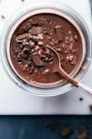

My Favorite Recipes
Double Chocolate Cookies
Origin: Michigan Source: Family Recipe Category: Dessert
My daughter learned to make these cookies at a baking camp at Zingermanns and has tweaked the recipe to fit the taste buds of her siblings. They are extremely sugary so the salt helps to balance it. Note, these cookies are best eaten very quickly.
Recipe Ingredients
- Unsalted butter
- Granulated Sugar
- Packed light or dark brown sugar
- Large egg
- Pure vanilla extract
- Semi-sweet chocolate chunks (melted)
- All-purpose flour
- Natural unsweetened cocoa powder
- Baking soda
- Salt
- Semi-sweet chocolate chunks
Recipe Steps
- In a mixing bowl cream together the butter, granulated sugar, and brown sugar
- Add the egg and vanilla extract and beat well
- Add the melted chocolate
- In a separate bowl combine the flour, baking soda, cocoa powder and salt
- Combine the wet and dry ingredients
- Add the unmelted chocolate chunks.
- Form 15 cookies and place on a baking sheet.
- Cook for 12 to 13 minutes at 350 degrees.
Additional Food images


Matcha Cookies
Origin: Japan Source: https://www.justonecookbook.com/green-tea-white-chocolate-cookies/ Category: Dessert
These cookies have the perfect flavor balance of the earthiness from the matcha and the sweetness and creaminess from the white chocolate chips. They are crispy and sweet, perfect for an afternoon snack or dessert. Enjoy with a cup of tea!
Recipe Ingredients
- All purpose flour
- Matcha powder
- Unsalted butter
- Kosher salt
- Confectioners sugar
- Egg yolks
- White chocolate chips
Recipe Steps
- Combine flour and matcha powder in large bowl
- Sift the flour and matcha powder
- Beat softened butter until smooth and creamy
- Add salt and blend
- Add sugar and beat until soft and light
- Add egg yolks and mix until well combined
- Gradually add flour and matcha mixture and mix until well combined
- Add chocolate chips and mix until incorporated
- Divide dough into two pieces. Shape each piece into cylinders about 1.5in in diameter
- Wrap logs in plastic wrap and chill in fridge for at least two hours
- Slice into ⅓ inch rounds and place on a baking tray lined with parchment paper
- Bake at 350 degrees for 15 minutes
Additional Food images


Mom's Brownie Recipe
Origin: American Source: Family Recipe Category: Dessert
On weekends, when I was younger, my mom and I would make these brownies together. They were always my favorite dessert and I still make them to this day, but my mom still makes them the best. My favorite part about them is that they are so easy to make!
Recipe Ingredients:
- Sugar
- Flour
- Butter
- Eggs
- Cocoa Powder
- Vanilla
- Baking Powder
- Salt
Recipe Steps:
- Preheat oven to 375 degrees
- Mix together in a medium size bowl Sugar, Flour, Cocoa Powder, Baking Soda and Salt.
- Beat eggs into the dry ingredients.
- Slowly add in the butter after the eggs are fully combined and then add vanilla.
- Put the batter into a greased baking sheet and bake for 20-30 minutes and enjoy!
Additional Food images


Shrimp Scampi

Recipe Ingredients
2 tablespoons butter 2 tablespoons extra-virgin olive oil 4 garlic cloves, minced ½ cup dry white wine or broth ¾ teaspoon kosher salt, or to taste ⅛ teaspoon crushed red pepper flakes, or to taste Freshly ground black pepper 1¾ pounds large or extra-large shrimp, shelled ⅓ cup chopped parsley Freshly squeezed juice of half a lemon Cooked pasta or crusty bread
Recipe Steps
In a large skillet, melt butter with olive oil. Add garlic and sauté until fragrant, about 1 minute. Add wine or broth, salt, red pepper flakes and plenty of black pepper and bring to a simmer. Let the wine reduce by half, about 2 minutes. Add shrimp and sauté until they just turn pink, 2 to 4 minutes depending upon their size. Stir in the parsley and lemon juice and serve over pasta or accompanied by crusty bread.
Additional Food images


White Sauce Pasta
Origin: France/Italy Source: Own Recipe Category: Main Dish
White sauce pasta is a creamy and savory dish that can be enjoyed for either lunch or dinner. Inspired by a fusion of Italian and French cuisine, the rough texture of rigatoni pasta allows for heavier sauces to be picked up, including the flavor profile of this delicious sauce. This union of two cultures allows for the perfect balance between each component of the recipe, creating a fulfilling entree that every individual can enjoy.
Recipe Ingredients
- Olive Oil
- Butter
- Diced Onion
- Diced Garlic
- Diced Bell Pepper
- Rigatoni Pasta
- Heavy Whipping Cream
- Milk
- Shredded Parmesan Cheese
- Salt
- Ground Pepper
- Garlic Powder
- Onion Powder
- Paprika
- Oregano Leaves
- Bay Leaves
- Parsley Leaves
Recipe Steps
- Bring a pot of water to a boil. Once the water begins to bubble, add in the pasta, salt, and a drizzle of oil.
- While the pasta is cooking, heat oil and butter in a saucepan.
- Once the butter has melted, add in diced onions and garlic. Sauté them until golden brown or aromatic.
- Stir in the bell pepper until slightly softened.
- Pour in the heavy cream, milk, salt, ground pepper, garlic powder, onion powder, paprika, oregano leaves, and bay leaves into the saucepan. Mix well and allow for the mixture to simmer. Adjust the seasoning to your taste.
- Add the shredded parmesan cheese and stir until melted.
- Throw in pasta and mix until the pasta is coated with the creamy sauce.
- Garnish with parsley leaves, and enjoy.
Additional Food images